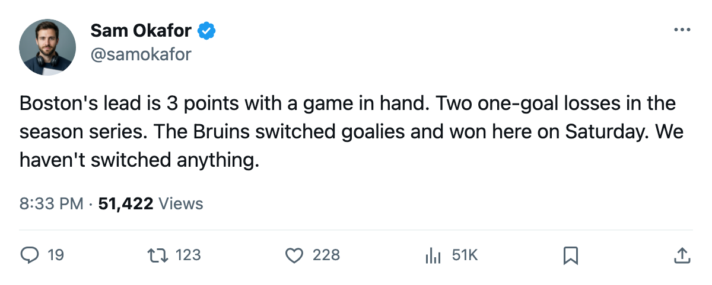

Northeast Race: 3 points, 1 game in hand, and the Bruins own the series
Toronto's cushion over Boston has halved in four days. The next meeting is in January.
 Sam OkaforLeafs beat reporter · Queen City Telegram
Sam OkaforLeafs beat reporter · Queen City Telegram
The Maple Leafs lost 2-3 to Boston on Saturday night at the Air Canada Centre, and the division lead that stood at 6 points on 13 November now reads 3.  Toronto Maple Leafs holds 28 points in 19 games.
Toronto Maple Leafs holds 28 points in 19 games.  Boston Bruins holds 25 in 18, with one more game than any division rival.
Boston Bruins holds 25 in 18, with one more game than any division rival.
The Bruins took the season series 2-0-0. Both meetings were decided by a single goal. The next one does not come until 7 January.
 Roberto Luongo95 did not dress. Mikael Tellqvist73 started in goal for the second straight loss, his third of the season's last four. The Bureau's Development Index has Tellqvist at -5, his overall reading 73 against a base of 77. He entered the year as the G1 and still carries that slot, with Maxime Ouellet86 at G2.
Roberto Luongo95 did not dress. Mikael Tellqvist73 started in goal for the second straight loss, his third of the season's last four. The Bureau's Development Index has Tellqvist at -5, his overall reading 73 against a base of 77. He entered the year as the G1 and still carries that slot, with Maxime Ouellet86 at G2.
Boston's coach made a move three days before the Toronto game.  Andrew Raycroft80 moved from the press box to G1, dropping
Andrew Raycroft80 moved from the press box to G1, dropping  Steve Shields79 to G2 and sending Chris Mason66 home entirely. Raycroft stopped 24 of 26 shots.
Steve Shields79 to G2 and sending Chris Mason66 home entirely. Raycroft stopped 24 of 26 shots.
Toronto's offense produced 3 goals across the Detroit and Boston losses. Before that pair, the Leafs had scored 58 goals in 17 games, a pace of 3.4 per night. In the last two it fell to 1.5.
 Marian Gaborik99 remains the only Leaf on the injured reserve, out with a leg injury until 25 December at $11.90M off the ice.
Marian Gaborik99 remains the only Leaf on the injured reserve, out with a leg injury until 25 December at $11.90M off the ice.
What the standings say today
| Club | GP | PTS | GF | GA | Streak |
|---|---|---|---|---|---|
| Toronto Maple Leafs | 19 | 28 | 61 | 37 | L2 |
| Boston Bruins | 18 | 25 | 53 | 43 | W1 |
 Montreal Canadiens Montreal Canadiens | 18 | 17 | 41 | 46 | W1 |
 Buffalo Sabres Buffalo Sabres | 17 | 14 | 44 | 54 | L3 |
 Ottawa Senators Ottawa Senators | 15 | 13 | 37 | 37 | W2 |
Boston's 3-point deficit and one game in hand means a Bruins win in their next contest closes the gap to 1. Toronto hosts  Philadelphia Flyers on 23 November, visits Ottawa Senators on 25 November, and welcomes
Philadelphia Flyers on 23 November, visits Ottawa Senators on 25 November, and welcomes  Washington Capitals on 26 November. Philadelphia arrives without
Washington Capitals on 26 November. Philadelphia arrives without  Marco Sturm85, out through 30 December with a leg, and
Marco Sturm85, out through 30 December with a leg, and  Marcus Ragnarsson78, out through 21 November with an abdomen injury.
Marcus Ragnarsson78, out through 21 November with an abdomen injury.
